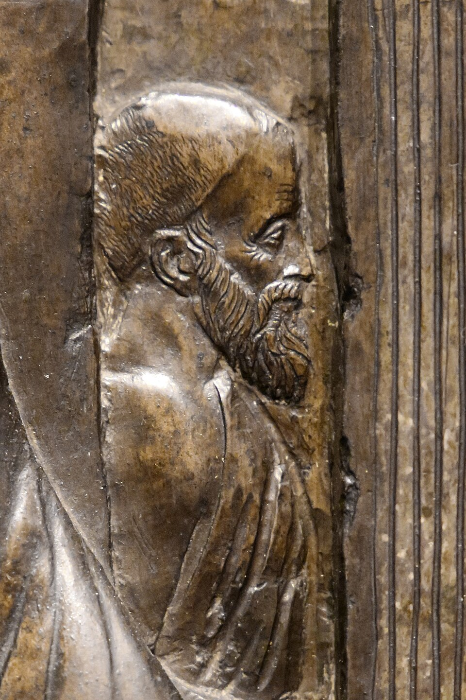
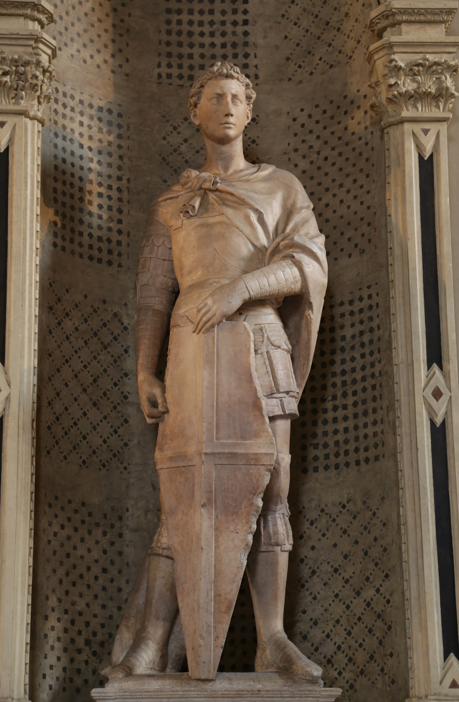
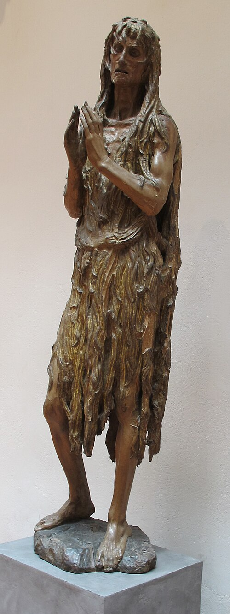
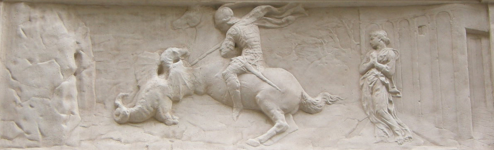
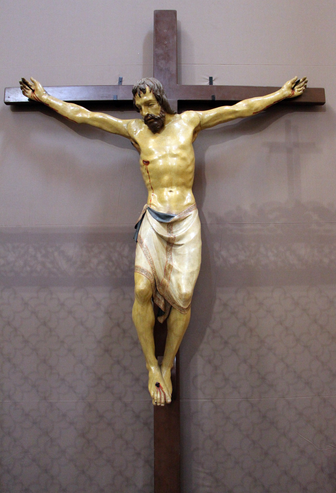
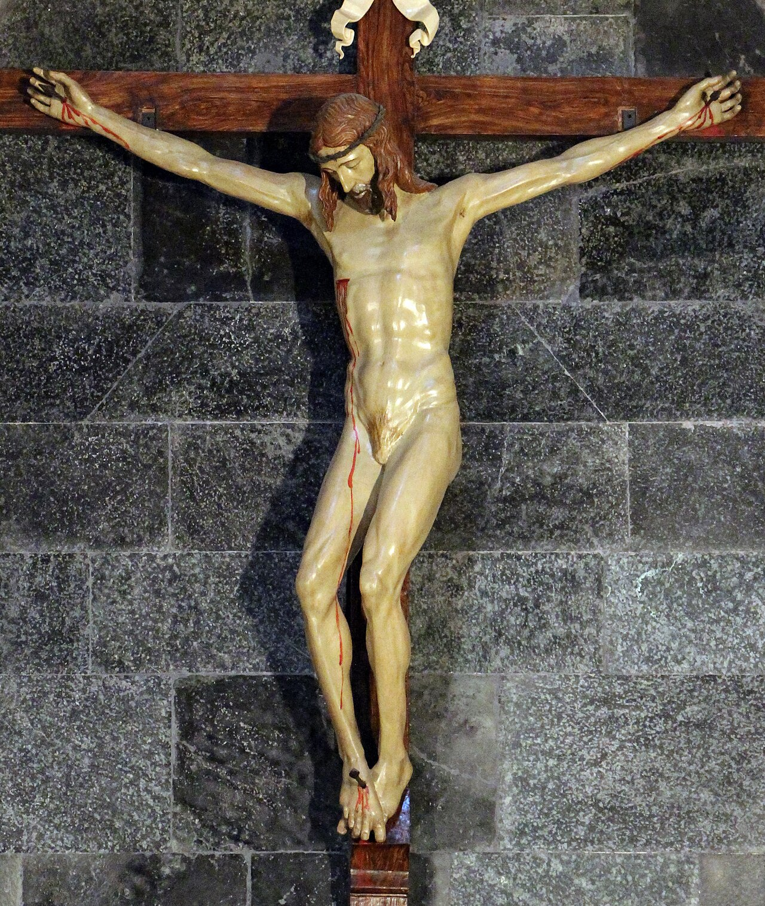

Donatello
Vers 1386–1466
Donner vie à la sculpture. Donatello transforme les corps, les visages et l’espace sculpté en une expérience profondément humaine.

En quelques mots
Un Florentin qui renouvelle la sculpture
Né à Florence vers 1386, Donatello se forme dans le milieu artistique de Lorenzo Ghiberti. Proche de Brunelleschi, il travaille le marbre, le bronze et le bois. Actif à Florence et à Padoue, il fait de la sculpture un art du mouvement, des émotions et de la profondeur. Il meurt à Florence en 1466.
Comment Donatello donne vie à la sculpture ?
Des corps crédibles, des gestes expressifs, des visages sans idéalisation systématique et un relief d’une finesse étonnante : le stiacciato.
Saint Georges

Rufus46 · CC BY-SA 3.0
À regarder
Observe ses jambes bien ancrées, le bouclier et le regard attentif.
À comprendre
Le saint semble prêt à agir : Donatello fait sentir une présence humaine.
David

Patrick A. Rodgers · CC BY-SA 2.0
À regarder
Observe le déhanchement, le chapeau, l’épée et la tête de Goliath.
À comprendre
Un nu en ronde-bosse qui renouvelle le dialogue avec l’Antiquité.


Marie-Madeleine pénitente

Sailko · CC BY-SA 3.0
À regarder
Observe le visage marqué, les mains rapprochées et les cheveux qui enveloppent le corps.
À comprendre
La fragilité et la souffrance deviennent des moyens d’expression puissants.
Saint Georges et le dragon

Sailko · CC BY-SA 3.0
À regarder
Suis le cavalier, le dragon, la princesse et les lignes de l’architecture.
À comprendre
Le relief très mince donne une impression de profondeur grâce au stiacciato.
Deux crucifix, deux visions du Christ

Une représentation très physique de la souffrance : observe le poids du corps et l’expression du visage.

Une recherche d’équilibre et de proportions : observe la construction du corps et l’attitude de la tête.
À regarder
Observe la position des bras, l'inclinaison de la tête et le traitement du torse. Qu'est-ce qui change dans la façon de représenter la souffrance ?
À comprendre
À quelques années de distance, deux artistes florentins proposent des visions différentes du corps du Christ.
À retenir
Donatello donne une présence nouvelle aux figures humaines. Il explore la vérité du corps, l’intensité des émotions et la profondeur de l’espace, jusque dans un relief presque plat.